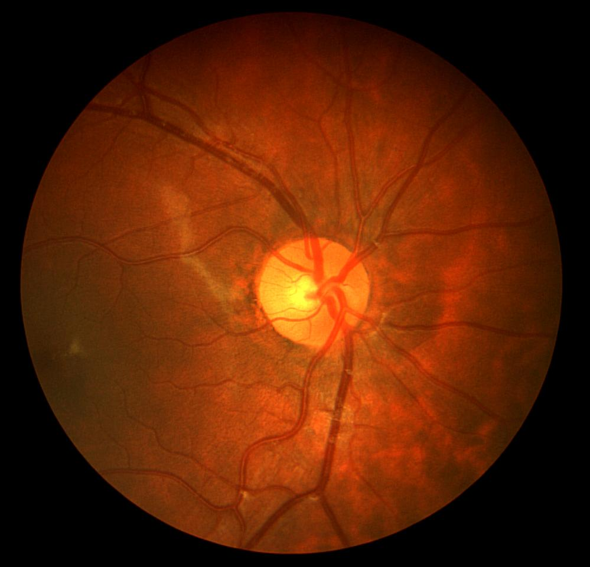
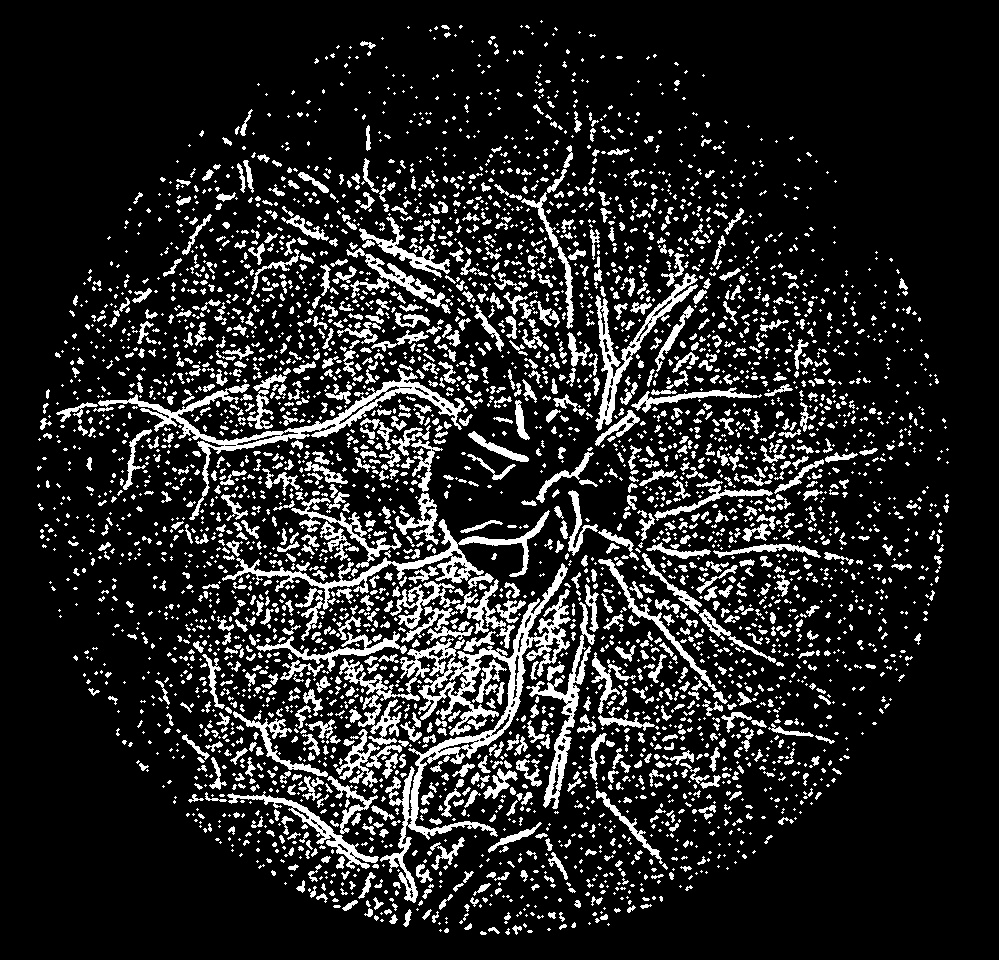

Computer vision tool for analyzing retinal images
Retinal vessel segmentation is a tool used in ophthalmology to analyze retinal images and extracts blood vesssels. These blood vessels are important for diagnosing diseases like diabetic retinopathy and glaucoma. This prototype demonstrates a simple method to segment blood vessels from retinal images using image processing techniques.

